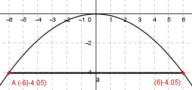
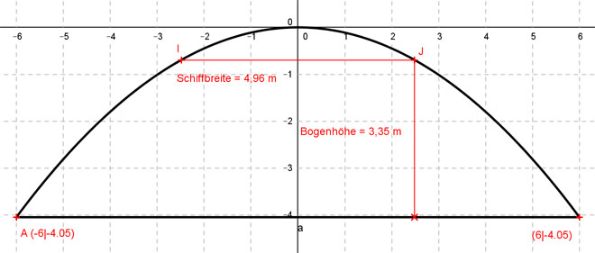

Aufgabe 120 Ein Brückenbogen über einem Fluss ist parabelförmig und symmetrisch. Sein höchster Punkt liegt 4,05 m über der Wasseroberfläche, und er überspannt 12 m von Ufer zu Ufer. Berechnen Sie die Bogenhöhe, um festzustellen, ob sie für die Durchfahrt eines 4,96 m breiten und 2,50 m hohen Schiffes ausreicht.  Der Koordinatenursprung liegt im Scheitelpunkt der nach unten geöffneten symmetrischen Parabel --> a muss negativ sein. Parabel der Form f(x) = ax2 Der Punkt A hat die Koordinaten (-6|-4,05) In f(x) = ax2 eingesetzt: - 4,05 = a * (-6)2 - 4,05 = a * 36 |:36 a = -4,05/36 f(x) = -4,05/36 * x2 Das Schiff ist 4,96 m breit, nach jeder Seite 2,48 m. f(2,48) = -4,05 * 2,482 f(2,48) = -0,7 m Bogenhöhe = 4,05 m - 0,7 m = 3,35 m > Schiffshöhe = 2,5 m --> Schiff kann durchfahren. 